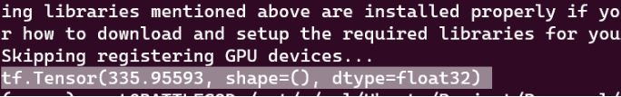
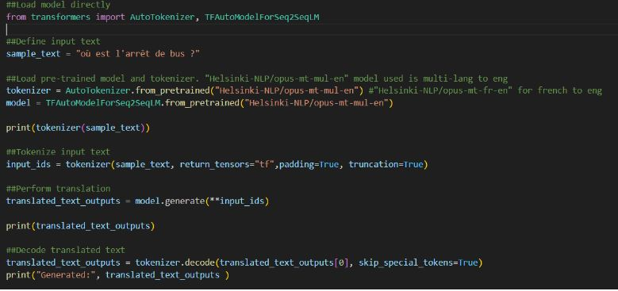
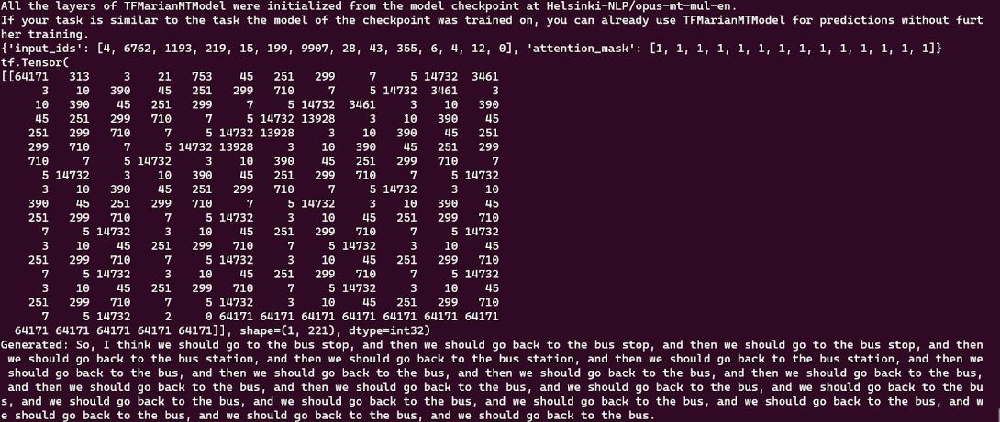
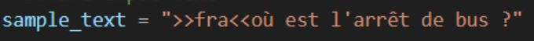
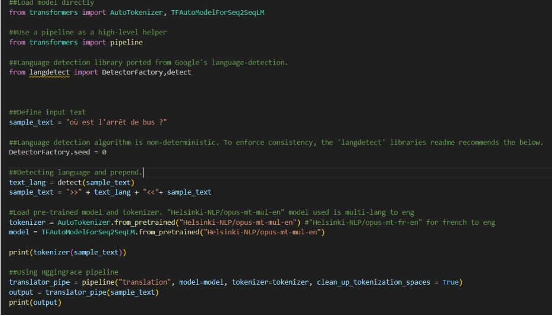
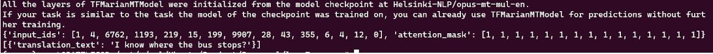

HuggingFace is currently the best place to find open-source pre-trained machine learning models. It's sort of like a popular code repository for machine learning models.
We can use HuggingFace to tune the pre-trained model and deploy it on serverless services or use their inference API for prototyping. However, our goal is to run it locally.
After going through the models' documentation, I chose: Helsinki-NLP/opus-mt-mul-en.
There are filters on the model pages. Make sure to filter based on your requirement and remember to check the option for the correct license suitable for you.
We will use Python to run the model. Keep in mind that I am using WSL2 with Ubuntu 22 LTS and Python 3.10
Before we start, it is recommended to create a virtual env for our project. Why ? Because , the more Python projects we have, the more likely it is that we need to work with different versions of Python libraries, or even Python itself. Different versions of libraries for one project can break compatibility in another project. I tend to use venv within the project folder and use pip freeze to check the project's packages. Alternatively, Conda is another option.
Find out how to create, activate, and deactivate a virtual environment here.
We have many DLL today.Popular ones include PyTorch and TensorFlow. HuggingFace initially supported PyTorch but at present supports TensorFlow as well. (We will use TensorFlow, as I want to explore TensorFlow Lite later for its better Android support)
We will be using a CPU only version of TensorFlow (I have an older NVIDIA GTX card which is not officially supported).
Installation details for TensorFlow can be found here.
Note: This will install the latest TensorFlow onto the system and this will cause some or the other backward compatibility issue with HuggingFace Transformer. Check out the ‘Installing HugginFace Transformers’ section to install a Transformer with compactable TensorFlow.
Note: Avoid using Conda for TensorFlow as it may not have the latest stable version.
For CPU users:
pip install --upgrade pip
pip install tensorflowpython3 -c "import tensorflow as tf; print(tf.reduce_sum(tf.random.normal([1000, 1000])))"If a tensor is returned, the installation is successful.
For CPU-support only, we can conveniently install HugginFace Transformers and TensorFlow 2.0 using the below command (This is my recommendation to install TensorFlow and HuggingFace Transformer on local which require CPU only support of TensorFlow):
pip install 'transformers[tf-cpu]'Finally, check if HuggingFace Transformers has been properly installed by running the following command. (It will download a pretrained model and run it)
python -c "from transformers import pipeline; print(pipeline('sentiment-analysis')('we love you'))"Note: You can find the code used in this blog here.
We can copy the template for the HuggingFace Pipeline which simplifies using models for inference. According to HuggingFace documentation, pipelines abstract complex code, providing a simple API for several tasks. Even if we don't have experience with a specific modality or aren't familiar with the underlying code behind the models, you can still use them for inference with the pipeline().
Note: Remember that the code provided will most likely be set to use PyTorch.
Code :
Output :
Note: Details on TFAutoModel can be followed up here.
Note: Details on AutoTokenizer can be followed up here. The tokenizer returns a dictionary with three important items:
Finetuning the model is beyond the scope of this blog. But if we prepend the language to the input text as below we will get a more accurate result.
However, based on the MarianMT Model documentation, we don’t need to prepend the source language in multilingual mode, leading to possible confusion or a bug ? Unfortunately I was not able to find an answer for this.
Code :
(I have prepend the language to the input text to improve the translation.)
Output :
In conclusion , using the pipeline is easier for inference than the traditional method, although the latter offers more tweaking flexibility.